Research Accomplishments
Publications Summary
Total Publications: 100+
Total Citations: 1,560+
h-index: 21 | i10-index: 39
Journal Articles: 80+ in Reputed International Journals (Q1, Q2, Q3)
Conference Proceedings & Presentations: 20+
Patents: 09 (Granted / Published across India, Germany, South Africa)
Funded Projects: 05 Sponsored Projects + 04 Consultancies
Doctoral Scholars: 09 Supervised (2 Completed, 7 Ongoing)
Google Scholar ID: jfVyeVsAAAAJ
Scopus Author ID: 57190169284
ORCID ID: 0000-0002-2126-7295
Web of Science Researcher ID: CAA-5342-2022
Vidwan / IRINS ID: 140335
Top 25 Most cited Articles
- A Dey, KM Pandey, “Magnesium metal matrix composites-a review,” Reviews on Advanced Materials Science, 2015, 42(1), pp. 58-67. 249 Citations
- G Manohar, A Dey, KM Pandey, SR Maity, “Fabrication of metal matrix composites by powder metallurgy: a review,” AIP Conference Proceedings, 2018, 1952(1), 020041. 130 Citations
- A Dey, KM Pandey, “Characterization of fly ash and its reinforcement effect on metal matrix composites: A review,” Reviews on Advanced Materials Science, 2016, 44(2), pp. 168-181. 77 Citations
- A Dey, S Debnath, KM Pandey, “Optimization of electrical discharge machining process parameters for Al6061/cenosphere composite using grey-based hybrid approach,” Transactions of Nonferrous Metals Society of China, 2017, 27(5), pp. 998-1010. 75 Citations
- A Das, SK Patel, M Arakha, A Dey, BB Biswal, “Processing of hardened steel by MQL technique using nano cutting fluids,” Materials and Manufacturing Processes, 2021, 36(3), pp. 316-328. 52 Citations
- AK Dey, A Dey, R Goswami, “Adsorption characteristics of methyl red dye by Na2CO3-treated jute fibre using multi-criteria decision making approach,” Applied Water Science, 2022, 12(8), 179. 51 Citations
- A Dey, KM Pandey, “Selection of optimal processing condition during WEDM of compocasted AA6061/cenosphere AMCs based on grey-based hybrid approach,” Materials and Manufacturing Processes, 2018, 33(14), pp. 1549-1558. 48 Citations
- MM Khan, A Dey, MI Hajam, “Experimental investigation and optimization of dry sliding wear test parameters of aluminum based composites,” Silicon, 2022, 14(8), pp. 4009-4026. 46 Citations
- A Dey, AK Dey, “Selection of optimal processing condition during removal of Reactive Red 195 by NaOH treated jute fibre using adsorption,” Groundwater for Sustainable Development, 2020, 12, 100522. 43 Citations
- A Dey, KM Pandey, “Wear behaviour of Mg alloys and their composites–a review,” International Journal of Materials Research, 2018, 109(11), pp. 1050-1070. 41 Citations
- A Das, SR Das, JP Panda, A Dey, KK Gajrani, N Somani, NK Gupta, “Machine learning-based modeling and optimization in hard turning of AISI D6 steel with advanced AlTiSiN-coated carbide inserts to predict surface roughness and other machining …,” Surface Review and Letters, 2022, 29(10), 2250137. 40 Citations
- N Niraj, KM Pandey, A Dey, “Tribological behaviour of Magnesium Metal Matrix Composites reinforced with fly ash cenosphere,” Materials Today: Proceedings, 2018, 5(9), pp. 20138-20144. 39 Citations
- AK Yadav, KM Pandey, A Dey, “Aluminium metal matrix composite with rice husk as reinforcement: a review,” Materials Today: Proceedings, 2018, 5(9), pp. 20130-20137. 38 Citations
- A Dey, M Debnath, KM Pandey, “Analysis of effect of machining parameters during electrical discharge machining using Taguchi-based multi-objective PSO,” International Journal of Computational Intelligence and Applications, 2017, 16(2). 36 Citations
- A Dey, KM Pandey, “Wire electrical discharge machining characteristics of AA6061/cenosphere as-cast aluminum matrix composites,” Materials and Manufacturing Processes, 2018, 33(12), pp. 1346-1353. 33 Citations
- A Dey, VRR Bandi, KM Pandey, “Wire electrical discharge machining characteristics of AA6061/cenosphere aluminium matrix composites using RSM,” Materials Today: Proceedings, 2018, 5(1), pp. 1278-1285. 31 Citations
- AK Dey, U Kumar, A Dey, “Use of response surface methodology for the optimization of process parameters for the removal of Congo Red by NaOH treated jute fibre,” Desalination and Water Treatment, 2018, 115, pp. 300-314. 28 Citations
- M Rahman, A Dey, KM Pandey, “Machinability of cenosphere particulate–reinforced AA6061 aluminium alloy prepared by compocasting,” Proceedings of the Institution of Mechanical Engineers, Part B: Journal of Engineering Manufacture, 2018. 28 Citations
- Z Mukhtar, A Dey, N Kundan, “Optimized surface engineering of Ti-6Al-4V: Comprehensive coating evaluation for biomedical applications,” Surfaces and Interfaces, 2025, 56, 105735. 24 Citations
- R Bharti, MM Butt, A Dey, “Dynamic emissivity control in MXene-based materials for next-generation thermal camouflage,” Journal of Porous Materials, 2025, 32(2), pp. 399-423. 24 Citations
- KA Sheikh, MM Khan, A Dey, MF Wani, “Advancements in surface engineering: a comprehensive review of functionally graded coatings for biomaterial implants,” Results in Surfaces and Interfaces, 2025, 19, 100509. 22 Citations
- MM Khan, A Dey, “Hybrid MCDM approach for examining the high-stress abrasive wear behaviour of in situ ZA-27/TiCp MMCs,” Materials Chemistry and Physics, 2022, 277, 125319. 21 Citations
- MM Khan, A Dey, “Selection of optimal processing condition during abrasive wear of in-situ ZA-37/TiCp composites using MCDM technique,” Ceramics International, 2021, 47(14), pp. 20090-20107. 21 Citations
- MM Khan, A Dey, “Microstructure-abrasive wear correlation of in situ ZA27/TiC composites,” Ceramics International, 2022, 48(16), pp. 22928-22942. 20 Citations
- AK Dey, A Dey, “Selection of optimal processing condition during removal of methylene blue dye using treated betel nut fibre implementing desirability based RSM approach,” Response Surface Methodology in Engineering Science, 2021. 20 Citations
Publications (Year-Wise)
2026
- R Bharti, M Mursaleen, A Dey, “Microstructural and Optical–Infrared Properties of Ag–TiN–Al2O3 Multilayers Fabricated by Magnetron Sputtering,” Ceramics International, 2026, 52(8), pp. 10244-10254. [Citations: 2]
- A Dey, Z Mukhtar, N Kundan, “Synthesis and characterization of functionally graded TaN/CrN/ZrN thin films on Ti-6Al-4 V,” Surface and Coatings Technology, 2026, 526, 133338. [Citations: 1]
- Z Mukhtar, A Dey, N Kundan, “Influence of Substrate Temperature on the Structural and Mechanical Behavior of Functionally Graded TaN/CrN/ZrN Coatings on Ti-6Al-4V,” Results in Surfaces and Interfaces, 2026, 23, 100784. [Citations: 1]
- Z Mukhtar, N Kundan, A Dey, “TaN/CrN/ZrN stepwise functionally graded thin-film coatings on Ti-6Al-4V for load-bearing biomedical applications: Microstructure, wettability, and nanomechanical properties,” Biomaterials Advances, 2026, 215072.
- ZA Ahanger, SS Saleem, A Dey, “Physical vapour deposition technologies of functionally graded coatings,” Proceedings of the Institution of Mechanical Engineers, Part L: Journal of Materials: Design and Applications, 2026. [Citations: 11]
- Z Mukhtar, A Dey, N Kundan, FA Mir, “Advancements in biomedical coatings: A comprehensive review of DC magnetron sputtering on Ti–6Al–4V alloy,” Proceedings of the Institution of Mechanical Engineers, Part J: Journal of Engineering Tribology, 2026, 240(3). [Citations: 11]
- R Bharti, M Mursaleen, A Dey, “Carbon-based radar-absorbing materials: a comprehensive review of design, properties, and applications,” Radiation Effects and Defects in Solids, 2026, 181(7-8), pp. 1264-1287. [Citations: 2]
- R Bharti, M Mursaleen, A Dey, “Microstructure and thermal-infrared performance of Ag/TiN/Al₂O₃ multilayer thin films,” Photonics and Nanostructures-Fundamentals and Applications, 2026, 71, 101533. [Citations: 2]
- B Lal, A Dey, “Advancements in titanium nanocomposites: Microstructure and fretting wear resistance via spark plasma sintering,” International Journal of Minerals, Metallurgy and Materials, 2026, 33(1), pp. 265-281. [Citations: 2]
- U Iqbal, NZ Khan, A Dey, “Friction and wear characterization of ZE41 magnesium alloy for medical implants,” Proceedings of the Institution of Mechanical Engineers, Part J: Journal of Engineering Tribology, 2026. [Citations: 1]
- B Lal, A Dey, U Maurya, A Ali, “Erratum—Morphology of wear debris during dry sliding of Ti–6Al–4V alloy at high temperature under vacuum environments,” Surface Review and Letters, 2026, 33(6), 2492002. [Citations: 1]
- A Dey, MM Khan, “Optimizing WEDM Parameters for Aluminum Metal Matrix Composites Using Hybrid PSO-TOPSIS Approach,” Journal of Advanced Manufacturing Systems, 2026, 25(3), pp. 581-601. [Citations: 1]
- B Lal, A Dey, U Maurya, A Ali, “Morphology of wear debris during dry sliding of Ti6Al4V/TiC composite at elevated temperatures in vacuum conditions,” Surface Review and Letters, 2026, 33(8), 2550044.
- R Bharti, M Mursaleen, A Dey, “Tailoring multispectral infrared camouflage via vacuum-annealed Ag+ TiN/TiN/Al₂O₃ thin films,” Canadian Metallurgical Quarterly, 2026, pp. 1-11.
- MQU Ain, A Dey, MF Wani, R Sehgal, MM Khan, “Functionally graded WC-Cr3C2-Ni coatings on Ni-C263: microstructural design and mechanical reliability,” Physica Scripta, 2026, 101(22), 225002.
- R Bharti, M Mursaleen, A Dey, “A review of FDM methods, microstructure, and structure–property relationships in polymer composites,” Advanced Composite Materials, 2026, pp. 1-100.
- R Bharti, MM Butt, A Dey, “Microstructure and optical–infrared properties of vacuum-annealed Ag–TiN–Al2O3 coatings,” Surface Innovations, 2026, pp. 1-12.
- B Lal, SK Jain, A Dey, PS Rathee, Q Murtaza, “Thermo-mechanical simulation of friction stir welding (FSW) via fractal-based CFD approach,” Journal of Adhesion Science and Technology, 2026, pp. 1-21.
2025
- Z Mukhtar, A Dey, N Kundan, “Optimized surface engineering of Ti-6Al-4V: Comprehensive coating evaluation for biomedical applications,” Surfaces and Interfaces, 2025, 56, 105735. [Citations: 24]
- KA Sheikh, MM Khan, A Dey, MF Wani, “Advancements in surface engineering: a comprehensive review of functionally graded coatings for biomaterial implants,” Results in Surfaces and Interfaces, 2025, 19, 100509. [Citations: 22]
- Z Mukhtar, N Kundan, A Dey, “Development of functionally graded films and coatings for biomaterials: Methods, properties, and challenges–A comprehensive review,” Tribology International, 2025, 209, 110714. [Citations: 11]
- B Lal, MF Wani, A Dey, A Singh, “In-vitro analysis of TC4 alloy reinforced with inert ceramics for biomedical applications synthesized using spark plasma sintering,” Tribology International, 2025, 210, 110744. [Citations: 3]
- B Lal, A Dey, MF Wani, “Influence of TiCp ceramic reinforcement on Ti6Al4V alloy matrix via spark plasma sintering technique,” Advances in Materials and Processing Technologies, 2025, 11(1), pp. 589-607. [Citations: 3]
- A Dey, B Lal, AK Dey, SK Jain, “Development of optimum performance model during spark-eroded processing of rheocasted Al6061/Cenosphere MMCs,” Advances in Materials and Processing Technologies, 2025, 11(2), pp. 1215-1228.
- R Bharti, MM Butt, A Dey, “Dynamic emissivity control in MXene-based materials for next-generation thermal camouflage,” Journal of Porous Materials, 2025, 32(2), pp. 399-423. [Citations: 24]
- B Lal, A Dey, MF Wani, “Nano-indentation characterization of TiC nano ceramic reinforced Ti-6Al-4V matrix composite,” Journal of Materials Engineering and Performance, 2025, 34(11), pp. 10577-10590. [Citations: 8]
- R Bharti, M Mursaleen, A Dey, “Optimizing stealth thin films: Nanoindentation and nanoscratch testing for enhanced mechanical properties,” Proceedings of the Institution of Mechanical Engineers, Part E: Journal of Process Mechanical Engineering, 2025. [Citations: 7]
- R Bharti, M Mursaleen, A Dey, “Thermal and Optical Performance of Ag+ TiN–TiN–Al2O3 Multilayer Coatings for Infrared Camouflage in Aerospace Applications,” Micro and Nanostructures, 2025, 208359. [Citations: 2]
- R Bharti, M Mursaleen, A Dey, “Fabrication and optical–infrared performance of Ag+ TiN/TiN/Al₂O₃ multilayer coatings by multi-target magnetron sputtering,” Canadian Metallurgical Quarterly, 2025, pp. 1-15. [Citations: 1]
- MQU Ain, A Dey, MF Wani, R Sehgal, MM Khan, “Microstructural and mechanical properties of nickel alloy C-263 for nuclear applications,” Canadian Metallurgical Quarterly, 2025, pp. 1-12. [Citations: 1]
- B Lal, A Dey, “Advancements in titanium nano-composites: Microstructure and fretting wear resistance via SPS,” International Journal of Minerals, Metallurgy and Materials, 2025. [Citations: 1]
- R Bharti, M Mursaleen, A Dey, “Microstructure evolution and optical–infrared properties of Ag/TiN/Al2O3 multilayers deposited by magnetron sputtering,” Canadian Metallurgical Quarterly, 2025, pp. 1-11.
- A Dey, G Chaudhary, AK Dey, “Delamination prediction on staircased-dispersed tapered laminate composite,” International Applied Mechanics, 2025, 61(4).
- A Dey, R Bharti, MM Bhatt, “Advanced multilayer thin films for stealth applications: optical, electrical, and thermal enhancements—a comprehensive study,” Journal of Optics, 2025. [Citations: 2]
- R Bharti, MM Butt, A Dey, “Engineering Broadband Electromagnetic Wave Absorbers: Innovations in Carbon-Based Composites, Magnetic Alloys, and Impedance Matching,” Russian Journal of Non-Ferrous Metals, 2025, 66(6), pp. 414-432. [Citations: 1]
- R Bharti, M Mursaleen, A Dey, “Preparation of Ag+ TiN/TiN/Al2O3 Multilayer Coatings by Magnetron Sputtering and Their Optical Properties,” Technical Physics, 2025, 70(10), pp. 381-386.
2024
- B Lal, A Dey, “Fretting wear characteristics of Ti6Al4V/TiC nano composites using response surface method,” Tribology International, 2024, 193, 109412. [Citations: 19]
- Z Mukhtar, N Kundan, A Dey, “Corrosion and wear characterization of Ti6-Al-4 V alloy: Experimental analysis and performance evaluation,” Tribology International, 2024, 197, 109745. [Citations: 17]
- B Lal, A Dey, “Effect of TiC nano-particle on microstructure evolution and tribological behaviour of Ti6Al4V composites fabricated via spark plasma sintering,” Tribology International, 2024, 197, 109775. [Citations: 12]
- KA Sheikh, MM Khan, A Dey, “Optimizing wear resistance of ZA-27 alloy through analytical modelling: A study on the effect of titanium carbide content, load, and speed,” Proceedings of the Institution of Mechanical Engineers, Part J: Journal of Engineering Tribology, 2024. [Citations: 16]
- KA Sheikh, MM Khan, A Dey, “Comprehensive analysis of TiC-reinforced ZA-37 alloy matrix composites: microstructural, hardness, and corrosion performance,” Journal of Bio-and Tribo-Corrosion, 2024, 10(2), 19. [Citations: 14]
- R Bharti, MM Butt, A Dey, “Advancements in electromagnetic shielding coatings for aerospace applications: a comprehensive review,” Surface Innovations, 2024, 12(8), pp. 440-450. [Citations: 15]
- A Dey, R Bharti, MM Bhatt, “Nanoindentation and Nanoscratch Testing for the Mechanical Characterization of Stealth Thin Film Coatings,” Russian Journal of Non-Ferrous Metals, 2024, 65, pp. 151-161. [Citations: 4]
2023
- MM Khan, A Dey, Z Rubanee, K Mushtaq, MI Hajam, SSU Islam, MB Shah, ..., “Zinc-Based Alloys for Implants,” Recent Advances in Materials and Manufacturing Technology: Select …, 2023.
- AK Dey, A Dey, “Use of electrochemical technique for the removal of lead and nickel from modelled aqueous solution,” European Chemical Bulletin, 2023.
2022
- AK Dey, A Dey, R Goswami, “Adsorption characteristics of methyl red dye by Na2CO3-treated jute fibre using multi-criteria decision making approach,” Applied Water Science, 2022, 12(8), 179. [Citations: 51]
- MM Khan, A Dey, MI Hajam, “Experimental investigation and optimization of dry sliding wear test parameters of aluminum based composites,” Silicon, 2022, 14(8), pp. 4009-4026. [Citations: 46]
- MM Khan, A Dey, “Hybrid MCDM approach for examining the high-stress abrasive wear behaviour of in situ ZA-27/TiCp MMCs,” Materials Chemistry and Physics, 2022, 277, 125319. [Citations: 21]
- MM Khan, A Dey, “Microstructure-abrasive wear correlation of in situ ZA27/TiC composites,” Ceramics International, 2022, 48(16), pp. 22928-22942. [Citations: 20]
- AK Dey, A Dey, R Goswami, “Selection of optimal performance characteristics during adsorption of Methyl red dye using sodium carbonate treated jute fibre,” Desalination and Water Treatment, 2022, 260, pp. 187-202. [Citations: 15]
- AK Dey, A Dey, R Goswami, “Fixed-bed column analysis for adsorption of Acid scarlet 3R dye from aqueous solution onto chemically modified betel nut husk fibre,” Desalination and Water Treatment, 2022, 252, pp. 381-390. [Citations: 14]
- A Dey, MM Khan, “MCD approach for assessing the optimal operating condition during sliding wear characteristics of LM25/SiC AMCs processed by an improved stir casting technique,” Silicon, 2022, 14(7), pp. 3673-3691. [Citations: 11]
- A Das, SR Das, JP Panda, A Dey, KK Gajrani, N Somani, NK Gupta, “Machine learning-based modeling and optimization in hard turning of AISI D6 steel with advanced AlTiSiN-coated carbide inserts to predict surface roughness and other machining …,” Surface Review and Letters, 2022, 29(10), 2250137. [Citations: 40]
- B Lal, A Dey, MF Wani, “Effect of frictional heating on mechanically mixed layers during dry sliding contact of Ti-6Al-4V alloys at high temperature in vacuum condition,” Surface Review and Letters, 2022, 29(10), 2250127. [Citations: 8]
- A Dey, MM Khan, “Investigation of erosion wear characteristics of LM13/SiC composites implementing box-behnken design methodology,” Journal of Bio-and Tribo-Corrosion, 2022, 8(4), 90. [Citations: 3]
- G Chaudhary, A Dey, AK Dey, “Stress and delamination analysis on overlapped-grouped and overlapped-dispersed tapered composite laminate,” International Applied Mechanics, 2022, 58(5), pp. 613-622. [Citations: 1]
- B Lal, A Dey, MF Wani, “Prediction of surface roughness during dry sliding wear: characteristics of Ti-6Al-4V alloys,” International Journal of Surface Engineering and Interdisciplinary Materials Science, 2022, 10(1), pp. 1-12. [Citations: 9]
- B Lal, A Dey, MF Wani, “Influence of temperature and applied load on adhesion and abrasion wear characteristics of Ti6Al4V alloy,” International Journal of Surface Engineering and Interdisciplinary Materials Science, 2022, 10(1), pp. 1-11. [Citations: 5]
- MM Khan, A Dey, Z Rubanee, K Mushtaq, MI Hajam, SSU Islam, MB Shah, ..., “Evaluation of Microstructure, Mechanical Properties and Biocompatibility of Biodegradable Zinc-Based Alloys for Implants,” International Conference on Advances in Materials and Manufacturing, 2022, pp. 267-277. [Citations: 2]
2021
- A Das, SK Patel, M Arakha, A Dey, BB Biswal, “Processing of hardened steel by MQL technique using nano cutting fluids,” Materials and Manufacturing Processes, 2021, 36(3), pp. 316-328. [Citations: 52]
- MM Khan, A Dey, “Selection of optimal processing condition during abrasive wear of in-situ ZA-37/TiCp composites using MCDM technique,” Ceramics International, 2021, 47(14), pp. 20090-20107. [Citations: 21]
- A Dey, M Shrivastav, P Kumar, “Optimum performance evaluation during machining of Al6061/cenosphere AMCs using TOPSIS and VIKOR based multi-criteria approach,” Proceedings of the Institution of Mechanical Engineers, Part B: Journal of Engineering Manufacture, 2021, 235(13), pp. 2174-2188. [Citations: 17]
- A Dey, KM Pandey, RN Rai, A Khan, A Das, “Application potential of response surface method on electro discharge machining of AA6061–cenosphere AMCs prepared by compocasting method,” Surface Review and Letters, 2021, 28(7), 2150056. [Citations: 1]
- AK Dey, A Dey, “Selection of optimal processing condition during removal of methylene blue dye using treated betel nut fibre implementing desirability based RSM approach,” Response Surface Methodology in Engineering Science, 2021. [Citations: 20]
- AK Dey, A Dey, “Desirability Based RSM Approach,” Response Surface Methodology in Engineering Science, 2021, p. 137.
2020
2018
- A Dey, KM Pandey, “Selection of optimal processing condition during WEDM of compocasted AA6061/cenosphere AMCs based on grey-based hybrid approach,” Materials and Manufacturing Processes, 2018, 33(14), pp. 1549-1558. [Citations: 48]
- A Dey, KM Pandey, “Wire electrical discharge machining characteristics of AA6061/cenosphere as-cast aluminum matrix composites,” Materials and Manufacturing Processes, 2018, 33(12), pp. 1346-1353. [Citations: 33]
- AK Dey, U Kumar, A Dey, “Use of response surface methodology for the optimization of process parameters for the removal of Congo Red by NaOH treated jute fibre,” Desalination and Water Treatment, 2018, 115, pp. 300-314. [Citations: 28]
- A Dey, KM Pandey, “Wear behaviour of Mg alloys and their composites–a review,” International Journal of Materials Research, 2018, 109(11), pp. 1050-1070. [Citations: 41]
- M Rahman, A Dey, KM Pandey, “Machinability of cenosphere particulate–reinforced AA6061 aluminium alloy prepared by compocasting,” Proceedings of the Institution of Mechanical Engineers, Part B: Journal of Engineering Manufacture, 2018. [Citations: 28]
- G Manohar, A Dey, KM Pandey, SR Maity, “Fabrication of metal matrix composites by powder metallurgy: a review,” AIP Conference Proceedings, 2018, 1952(1), 020041. [Citations: 130]
- N Niraj, KM Pandey, A Dey, “Tribological behaviour of Magnesium Metal Matrix Composites reinforced with fly ash cenosphere,” Materials Today: Proceedings, 2018, 5(9), pp. 20138-20144. [Citations: 39]
- AK Yadav, KM Pandey, A Dey, “Aluminium metal matrix composite with rice husk as reinforcement: a review,” Materials Today: Proceedings, 2018, 5(9), pp. 20130-20137. [Citations: 38]
- A Dey, VRR Bandi, KM Pandey, “Wire electrical discharge machining characteristics of AA6061/cenosphere aluminium matrix composites using RSM,” Materials Today: Proceedings, 2018, 5(1), pp. 1278-1285. [Citations: 31]
- N Behera, KM Pandey, AB Deoghare, A Dey, “Modeling & Simulation of Interface Stability in Metal Matrix Composites Subjected to off-axis loading using Cohesive Zone Model under Elevated Temperature: A Review,” Materials Today: Proceedings, 2018, 5(9), pp. 20085-20091. [Citations: 2]
2017
- A Dey, M Debnath, KM Pandey, “Analysis of effect of machining parameters during electrical discharge machining using Taguchi-based multi-objective PSO,” International Journal of Computational Intelligence and Applications, 2017, 16(2). [Citations: 36]
- AK Dey, A Dey, M Brahma, “Design of an overhead Tank for the Newly Built Guest House in CIT (Central Institute of Technology, Assam),” Int. J. Eng. Technol, 2017, 9, pp. 73-83. [Citations: 1]
- G Chaudhary, A Dey, AK Dey, S Das, “Delamination analysis of fly drop-off in tapered laminated composite,” Int. J. Eng. Technol, 2017, 9, pp. 32-36. [Citations: 1]
2016
2015
- A Dey, KM Pandey, “Magnesium metal matrix composites-a review,” Reviews on Advanced Materials Science, 2015, 42(1), pp. 58-67. [Citations: 249]
2014
- A Dey, SC Saha, KM Pandey, “Study of mechanical properties change during friction stir spot welding of aluminium alloys,” Current Trends in Technology & Sciences, 2014, 3(1), pp. 26-33. [Citations: 6]
- A Dey, KM Pandey, PL Choudhury, “A comparison study of filament wound composite cylindrical shell used in under water vehicle application by finite element method,” 5th International & 26th National Conference on All India Manufacturing Technology, Design and Research Conference, IIT Guwahati, 2014. [Citations: 6]
- A Dey, PL Choudhury, KM Pandey, “A computational study of buckling analysis of filament wound composite pressure vessel subjected to hydrostatic pressure,” Global Journal of Researches in Engineering A: Mechanical and Mechanics Engineering, 2014. [Citations: 3]
- KM Pandey, A Dey, PL Choudhury, “Buckling behaviour of circular ring stiffened filament wound composite pressure hull through finite element analysis,” Applied Mechanics and Materials, 2014, 656, pp. 288-297. [Citations: 2]
- A Dey, G Chaudhary, PL Choudhury, KM Pandey, “Study of Post Buckling Behavior of Carbon-Epoxy Composite Pressure Vessel Subjected to Hydrostatic Pressure,” International Journal of Trends in Economics Management & Technology (IJTEMT), 2014.
- AK Dey, A Dey, S Sukladas, “Analysis of Production of CH4and CO2from Food Waste (MSW) by Anaerobic Digestion (Dry System) Under Mesophilic Condition,” 2014.
2013
Reviewer of Journals
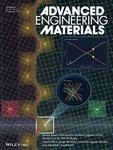
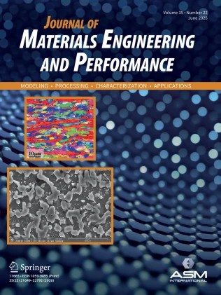
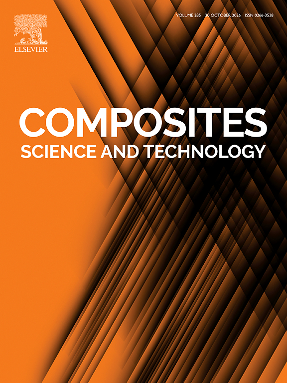
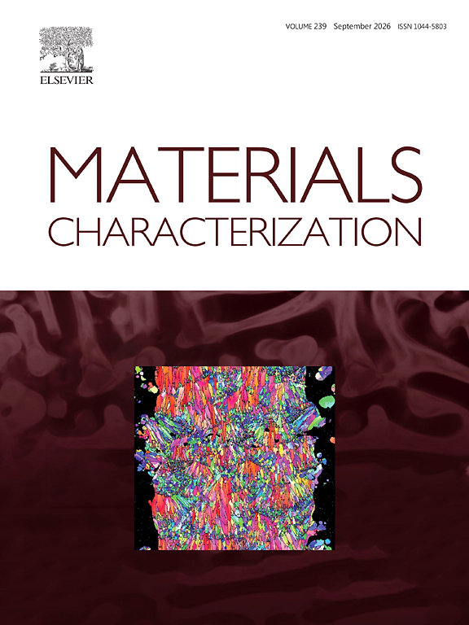
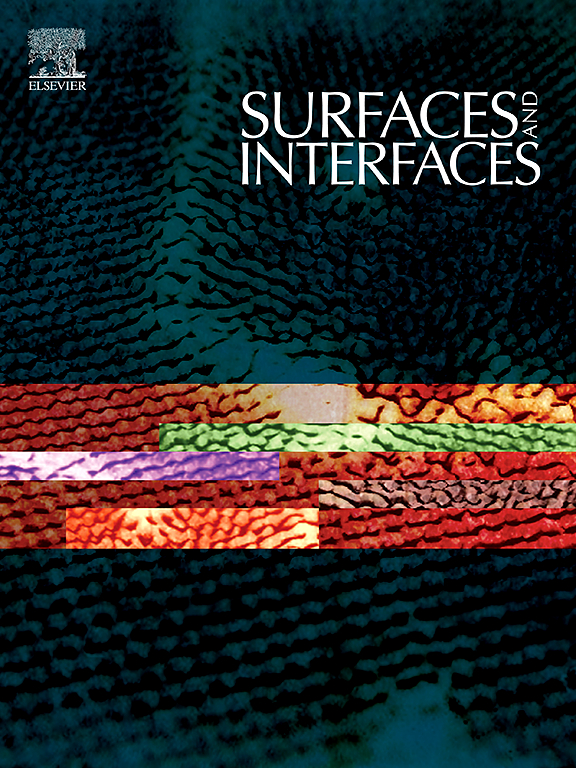
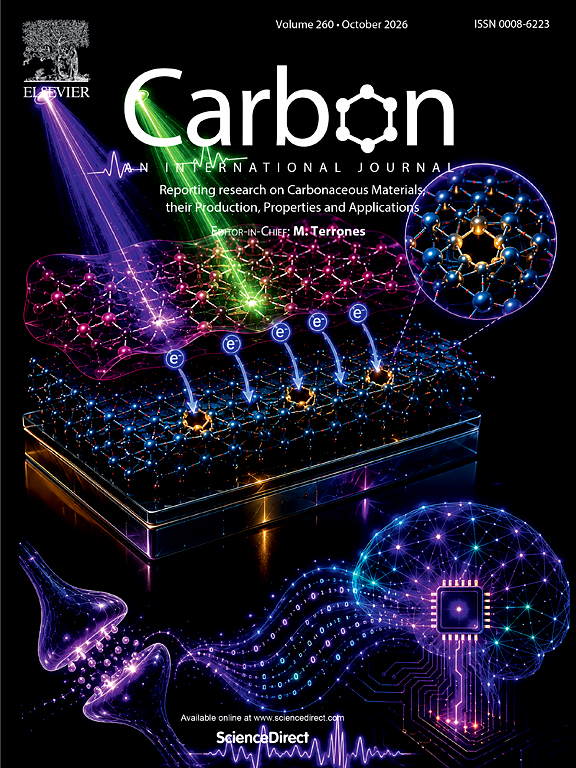
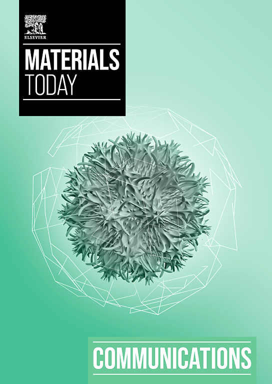
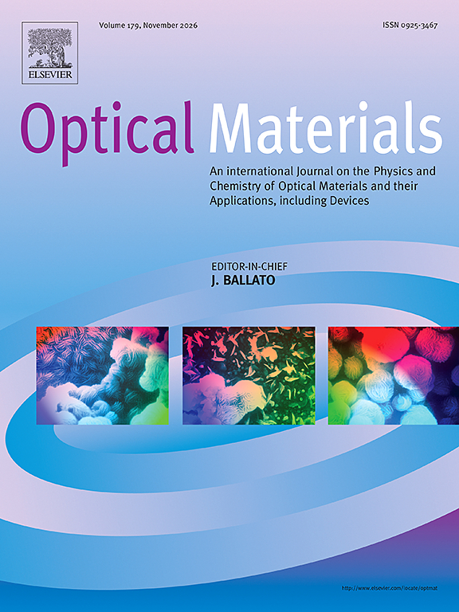
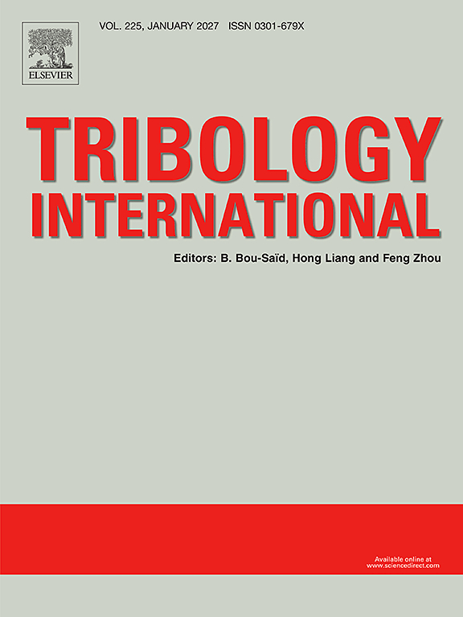
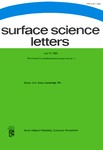
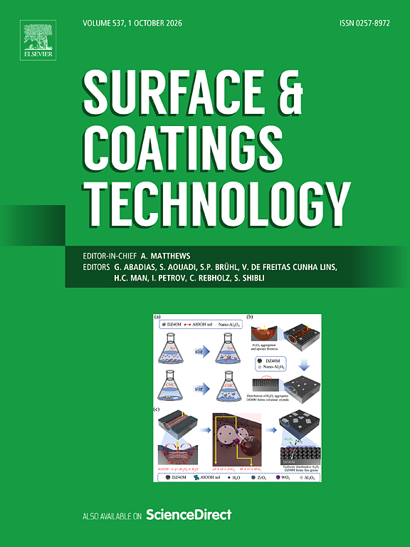
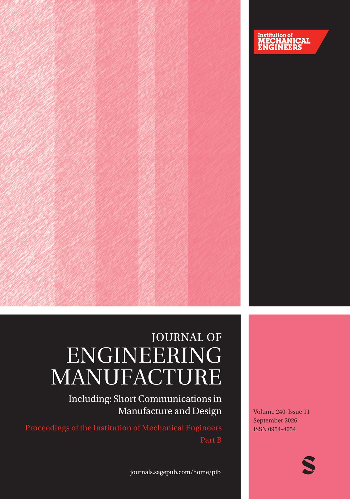
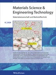

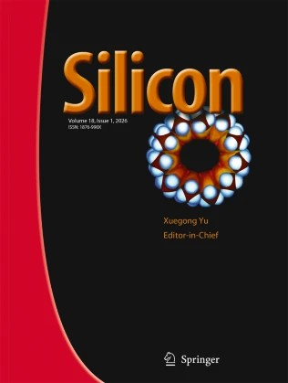
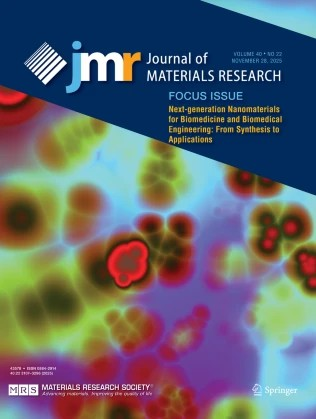
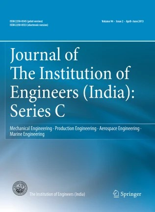
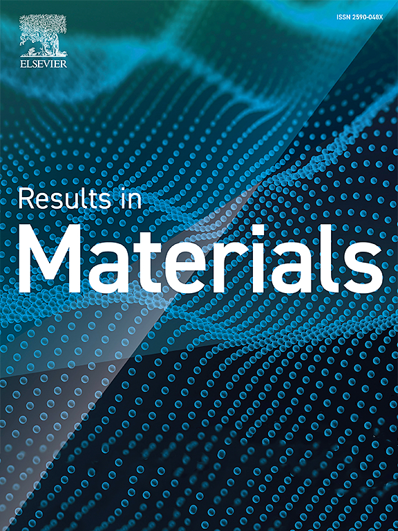
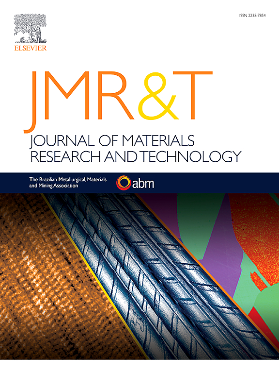
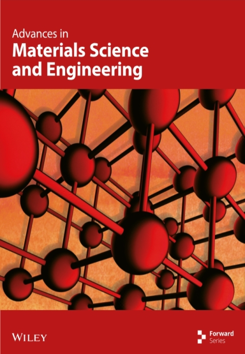
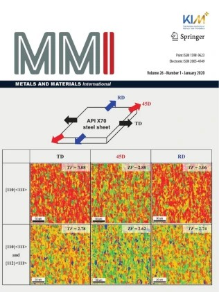
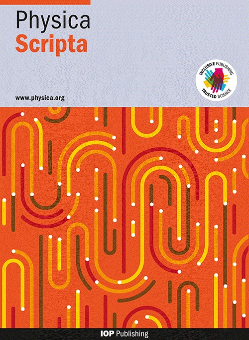
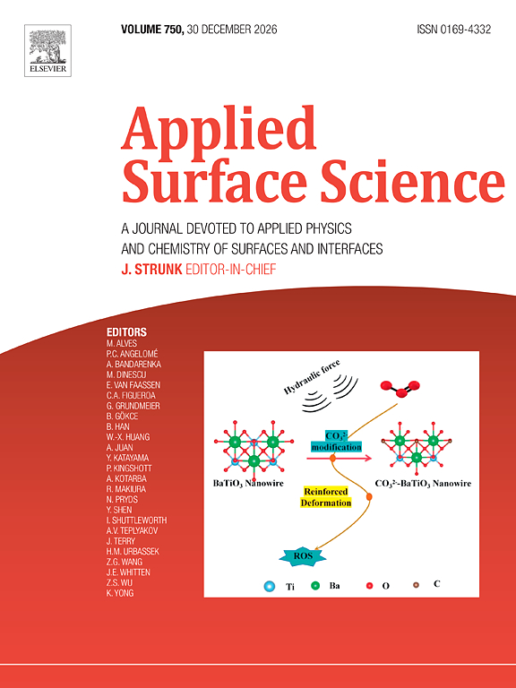
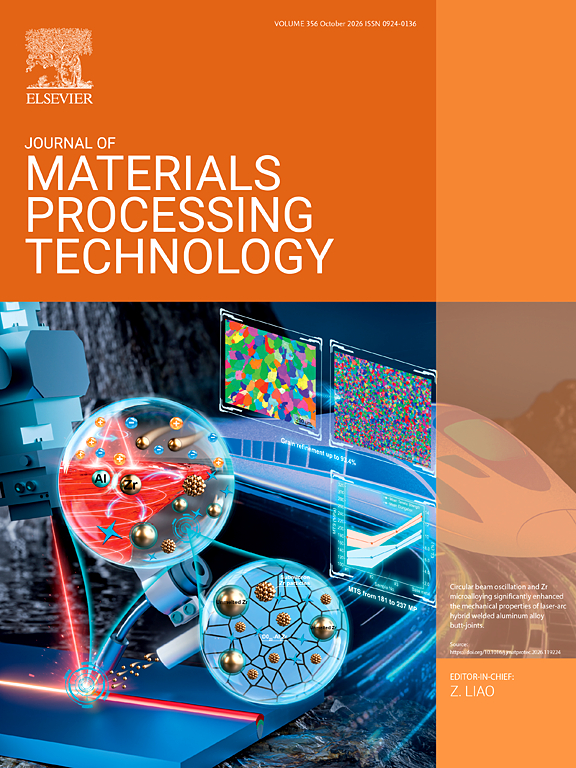
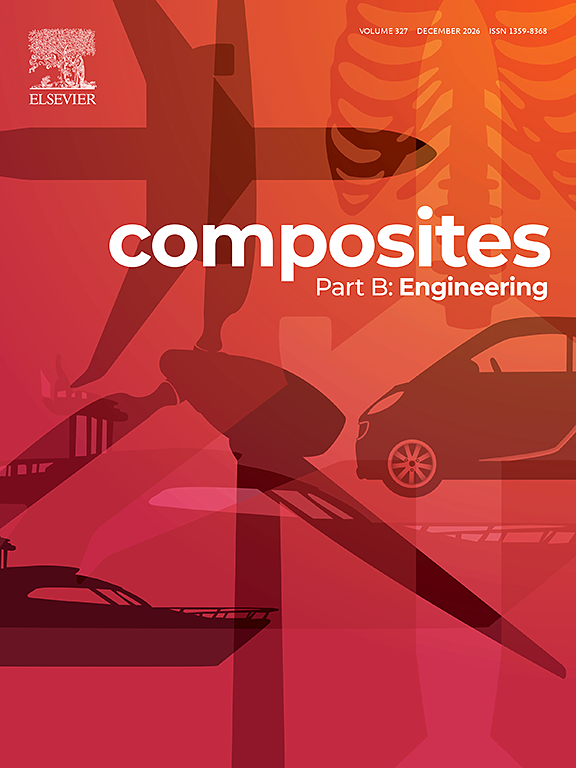
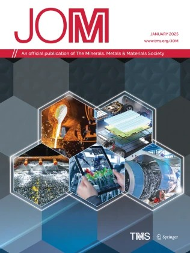
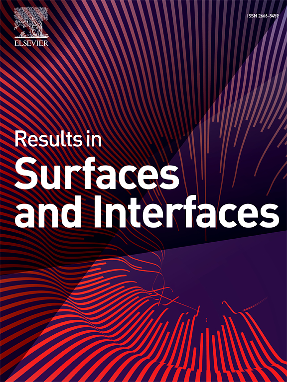
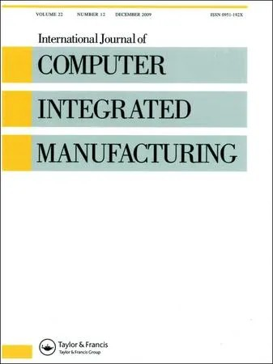
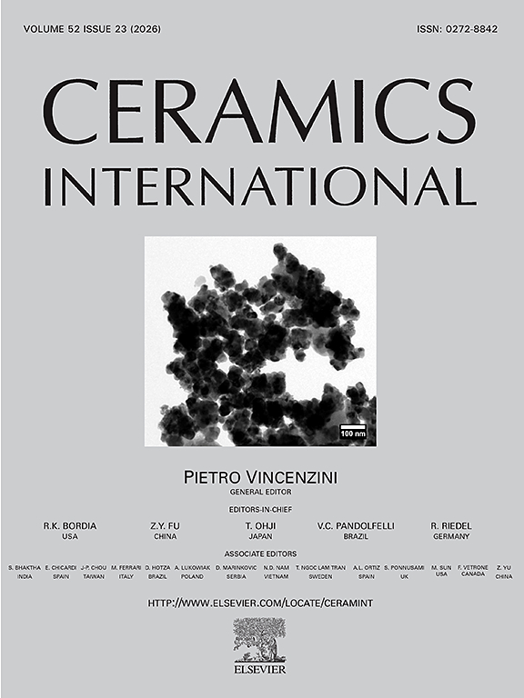
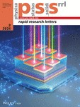
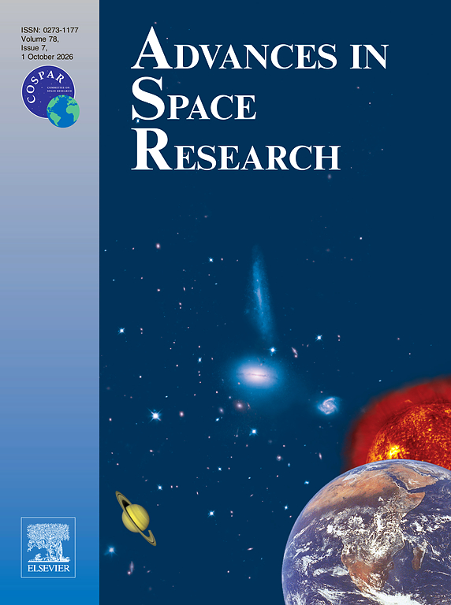
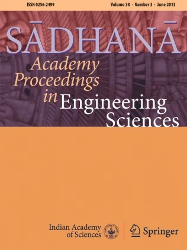
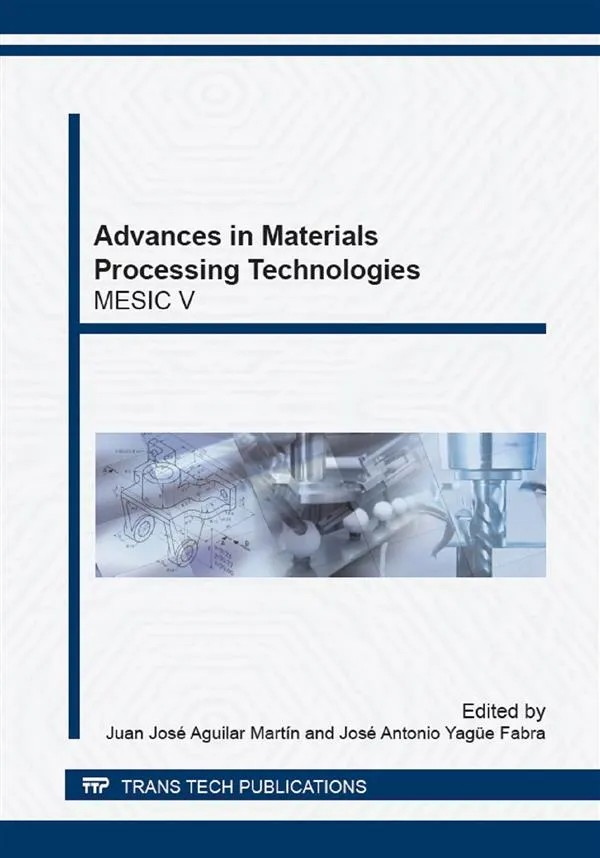
Sponsored Projects
- Principal Investigator (PI) - Development of Novel WC-Cr2C3-Ni functionally graded composite coatings on Nickel based C-263 super alloy for Nuclear application (SERB-CRG, 36 months)
- Principal Investigator (PI) - Effect of Laser surface texturing on the biodegradability of zinc based implant material (24 months)
- Co-Investigator (Co-PI) - Design and Development of Novel TiN-CrN-ZrN functionally graded composite coatings for biomedical implant material (SERB-CRG, 36 months)
Patents
- Biodiesel operating engine - Indian Patent Office, Granted (374118-001)
- Sand jet machining - Indian Patent Office, Granted (351279-001)
- Wifi -based oxygen concentrator - Indian Patent Office, Granted (346741-001)
- Ein system zur herstellung eines nanobrennstoffs - German Patent Office, Granted (20 2022 100127.8)
- System zur hohen adsorptiven entfernung vonkationischem farbstoff unter verwendung von mitanionischen tensiden modifizierter aktivkohle - German Patent Office, Granted (20 2023 100304.4)
- A composition and a method of preparing an adsorbent for removing a cationic dye from an aqueous solution - South African Patent Office, Granted (02840)
- A connector assembly device and a system to prolong the life of leds - Granted (476908-001)
- Manual Chain Link Bending Tool with Dual Levered Roller Mechanism - Granted (468460-001)
- Hand-Operated Chain Link Bending Fixture with Rotary Bearing Assembly - INDIAN PATENT OFFICE, Published (202531019695A)